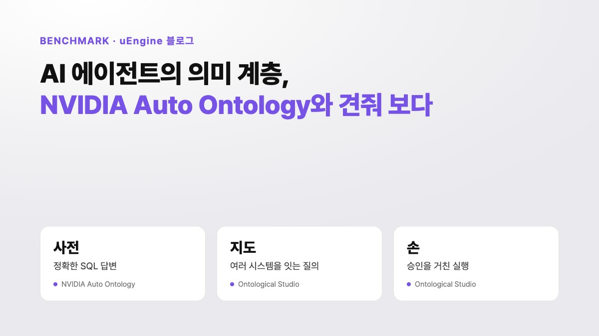
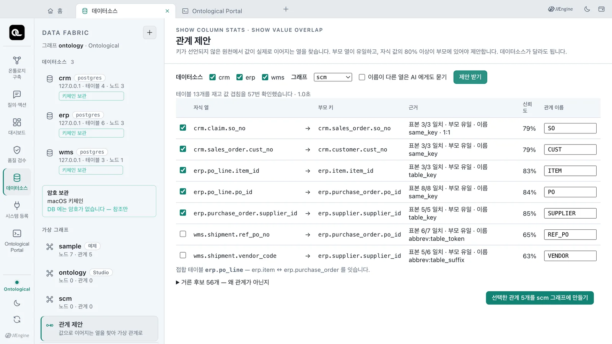
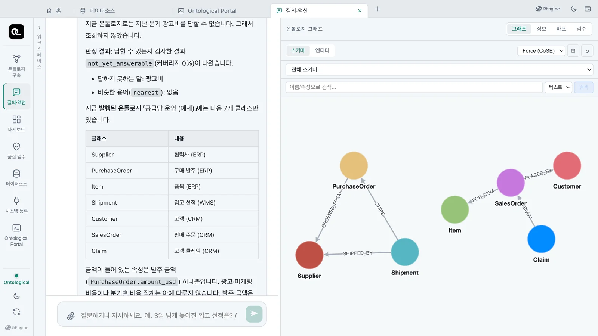

AI 에이전트의 의미 계층, NVIDIA Auto Ontology와 견줘 보다

11월 7일 추가: NVIDIA의 소스 코드를 읽고 Ontological Studio에 없던 기능 네 가지를 추가했습니다. 기능별 지원 여부는 O/X 표로 정리했습니다.
1. 사전과 지도
AI 에이전트에게 회사 데이터베이스를 그대로 열어 주면 엉뚱한 답이 나옵니다. 테이블과 열 이름만 보고 SQL을 만들기 때문입니다. 부서마다 다른 매출 기준을 뒤섞고, 실제로는 없는 테이블 관계를 지어냅니다. 그래서 데이터와 에이전트 사이에 의미 계층을 둡니다. 각 열의 뜻과 테이블 사이의 관계를 미리 정리해 둔 것입니다.
2026년 11월 NVIDIA가 이 의미 계층을 오픈소스 Auto Ontology로 공개했습니다. 회사 DB의 메타데이터를 읽어 용어집, 검증된 계산식, 테이블 사이의 조인 관계를 자동으로 만듭니다. 에이전트는 이 정보를 바탕으로 SQL을 만듭니다.
사전에 비유할 수 있습니다. 사전은 단어의 뜻을 정확히 알려 줍니다. 하지만 목적지까지 길을 찾아 주지도, 대신 운전해 주지도 않습니다. Auto Ontology는 정확한 사전입니다. 유엔진의 Ontological Studio는 지도에 가깝습니다. 여러 시스템에 흩어진 데이터가 어떻게 이어지는지 보여 줍니다. 그 연결을 따라 답을 찾고, 사람이 승인하면 업무 시스템에서 실제로 일을 처리합니다.
두 제품에 같은 일을 맡겼을 때 어떤 차이가 있는지 비교합니다. NVIDIA를 참고해 Ontological Studio에 추가한 기능도 소개합니다. 각 제품이 어떤 기능을 지원하는지도 정리했습니다.
2. 같은 일을 두 제품에 맡기면
예제 회사의 구매 ERP, 물류 WMS, 고객 CRM 데이터로 다섯 가지 일을 비교했습니다. Ontological Studio 칸에는 실제 실행 결과를 담았습니다. NVIDIA 칸에는 공개된 소스 코드와 공식 문서에서 확인한 동작을 정리했습니다. 직접 설치해 실행하지는 않았습니다.
| 해 본 일 | NVIDIA Auto Ontology | Ontological Studio |
|---|---|---|
| WMS 선적과 ERP 발주 잇기 같은 발주 번호가 WMS에서는 ref_po_no, ERP에서는 po_id | 하나의 연결 안에서 조인 관계를 찾고 SQL을 만듭니다. 서로 다른 DB 사이의 조인은 다루지 않습니다. | 관계 제안 기능이 ref_po_no → po_id를 찾았습니다(표본 7개 중 6개 일치). 이 관계로 3단계 질의를 하면 3일 넘게 늦은 선적 SHP-02·SHP-03이 Shenzhen Goldline PCB의 발주 건임을 확인할 수 있습니다. |
| "지난 분기 광고비는?" 광고 데이터는 없습니다 | check_answerable이 질문에 나온 개체 중 데이터에서 확인할 수 있는 비율을 0~1 숫자로 반환합니다. 그 결과에 따른 동작은 호출하는 쪽에서 정합니다. | not_yet_answerable로 판정하고 「광고비」가 없다고 알립니다. 에이전트는 없는 데이터를 바탕으로 질의를 만들어 실행하지 않습니다. |
| "그 선적을 긴급 처리해" | 설계상 읽기 전용입니다. MCP 도구 9개 모두 조회만 합니다. | 액션 계획 → 정책 판정 → 사람 승인 → 실행 순서로 WMS 우선순위를 바꾸고, 취소하면 역순으로 되돌립니다. |
| 원천 DB 암호 보관 | Vault를 켜면 암호를 DB 밖에 보관합니다. 켜지 않으면 DB에 평문 JSON으로 저장합니다. Vault에서 암호를 읽지 못한 연결은 별도 안내 없이 목록에서 빠집니다. | 기본적으로 OS 키체인(또는 Vault)에 암호를 보관하고 DB에는 참조만 남깁니다. 암호를 읽지 못하면 해당 데이터소스에 오류를 표시합니다. |
| 업무 규정 문서로 구축 | DB 메타데이터만 읽습니다. | 문서와 DB를 함께 읽습니다. 개념마다 출처 문서와 쪽수를 기록합니다. |
정리하면 Auto Ontology는 정확한 SQL 답변에 집중합니다. Ontological Studio는 여러 시스템을 잇는 질의와 승인을 거친 실행까지 지원합니다. 해결하려는 문제가 다릅니다.
3. NVIDIA에서 배워 적용한 세 가지
비교 과정에서 Auto Ontology가 더 잘 갖춘 부분도 확인했습니다. 그중 세 가지를 Ontological Studio에 바로 적용했습니다. 튜토리얼 22~24장에서 영상과 함께 따라 할 수 있습니다.
키가 없어도 관계를 찾습니다
Auto Ontology는 부모 쪽 열의 값이 중복되지 않아야 조인 관계로 인정합니다. 우리도 이 원칙을 적용했습니다. 여기에 자식 쪽 값의 80% 이상이 부모 쪽에 있어야 한다는 기준을 더했습니다. 상태·수량·날짜 열은 처음부터 제외합니다. 데이터베이스가 원천 데이터를 복사하지 않고 열의 통계를 구하면(SHOW COLUMN STATS, SHOW VALUE OVERLAP), Studio가 그 결과를 근거로 관계를 제안합니다.
예제 DB 세 곳의 테이블 13개에서 통계를 구하는 데 1초가 걸렸습니다. 관계 7개를 제안하고 후보 56개를 제외했습니다. Auto Ontology는 임베딩 키가 없으면 추론을 건너뜁니다. 우리가 적용한 관계 판단은 AI 없이도 작동합니다.

관계 제안마다 일치하는 표본 수, 부모 쪽 값의 중복 여부, 적용된 이름 규칙을 표시합니다.
답할 수 있는지 먼저 판정합니다
Auto Ontology의 check_answerable은 질문에 나온 개체 중 데이터에서 확인할 수 있는 비율을 0~1 숫자로 반환합니다. 우리는 이 방식을 참고해 결과를 다섯 가지로 나눠 판정합니다. 답변 가능, 일부 가능, 아직 불가, 되물어야 함, 발행 안 됨입니다. AI의 추측 대신 규칙에 따라 판정합니다. 구축할 때 실제로 실행해 검증한 골든 퀘스천과 일치하면 검증된 경로로 답합니다. 질문에 나온 번호가 실제 인스턴스에 해당하는지도 확인합니다. 예를 들어 "S-KR-01"은 협력사 「한빛정밀」로 확인했습니다.

"지난 분기 광고비는?" — 답할 수 있는지 먼저 판정합니다. 에이전트는 없는 데이터로 답을 만들지 않습니다.
원천 암호는 데이터베이스 밖에 둡니다
Auto Ontology는 Vault를 켜면 접속 정보를 DB 밖에 둡니다. 우리는 Vault를 켜지 않아도 접속 정보를 데이터베이스 밖에 보관하도록 기본값을 바꿨습니다. 데스크톱에서는 OS 키체인에, 서버에서는 고객의 Vault나 OpenBao에 암호를 보관합니다. DB에는 keychain:ds/erp 같은 참조만 남습니다. 원천 데이터베이스의 암호가 바뀌면 「암호 바꾸기」에서 한 번만 변경하면 됩니다. 연결된 가상 노드는 그대로 유지됩니다.
실제 앱을 세 번 켜고 끄며 21가지를 확인했습니다. 사용자 매핑과 서버 로그에 암호가 남지 않는지 확인했습니다. 키체인 항목이 사라졌을 때 해당 데이터소스에만 오류가 나는지도 확인했습니다.
4. NVIDIA 코드를 읽고 추가한 기능 네 가지
첫 비교를 마친 뒤 NVIDIA의 소스 코드를 직접 읽었습니다. 이를 바탕으로 Ontological Studio에 없던 기능 네 가지를 추가했습니다. 네 가지 모두 실제 앱에서 시험했습니다.
말이 달라도 뜻이 같으면 알아듣습니다
현업에서는 같은 대상을 여러 이름으로 부릅니다. 「협력사」를 「공급사」나 「벤더」라고 부르기도 합니다. 이제 클래스와 속성마다 동의어를 등록할 수 있습니다. "공급사별 발주 금액"을 물으면 협력사(Supplier)를 찾아 답합니다. 검토를 마친 용어에는 인증 표시도 붙입니다. NVIDIA는 인증 여부만 표시합니다. 우리는 인증된 용어만 써서 답하도록 제한할 수도 있습니다.
질문 속 값이 실제로 있는지 확인합니다
NVIDIA의 값 확인 방식을 참고했습니다. 질문에 나온 값이 데이터에 그대로 있는지 먼저 확인합니다. 없으면 대소문자만 다른 값이나 비슷한 값이 있는지 차례로 확인합니다. "우선순위가 URGNET인 선적"처럼 오타가 있으면 바로 답하지 않고 "URGENT인가요?"라고 되묻습니다.
여기에 두 가지를 더했습니다. 모델 설명에 적어 둔 값은 실제 데이터에 아직 없어도 올바른 값으로 인정합니다. 질문에 나온 이름이 데이터에 없지만 골든 퀘스천에 있는 이름과 비슷하면, 그 이름이 맞는지 되묻습니다. "Shenzen Goldline PCB"를 물으면 "Shenzhen Goldline PCB인가요?"라고 묻는 식입니다.
검증된 계산을 그래프 경로로 정의합니다
NVIDIA는 검증된 계산식을 SQL로 저장합니다. 우리는 SQL뿐 아니라 Cypher로도 정의할 수 있게 했습니다. 선적에서 발주를 거쳐 협력사로 이어지는 관계도 계산에 그대로 담을 수 있습니다. 골든 퀘스천이 이 계산을 가리키면 에이전트는 질의를 새로 만들지 않고 검증된 계산을 실행합니다. 예제에서 "3일 넘게 늦어진 입고 선적"을 물으면 SHP-03(9일)과 SHP-02(7일), 그리고 두 선적의 발주처인 Shenzhen Goldline PCB를 답으로 제시합니다.
Apache Ossie 파일로 주고받습니다
Auto Ontology는 의미 모델을 오픈 표준인 Apache Ossie YAML로 내보내고 가져옵니다. Ontological Studio도 「파일」 메뉴에서 같은 형식으로 내보내고 가져올 수 있습니다. NVIDIA 고유의 YAML 파일도 가져옵니다. 인증, Cypher 계산, 골든 퀘스천처럼 Ossie에 없는 정보는 확장 항목에 담습니다. 한 제품에서 정리한 용어와 계산식을 다른 제품에서도 이어서 쓸 수 있습니다.
얼마나 나아졌을까요
답변할 수 있는 질문인지 제대로 판단하는지 평가하려고 한국어 질문 37문항을 만들었습니다. 동의어로 묻는 질문, 오타가 있는 질문, 데이터가 없는 질문 등이 들어 있습니다. 질문에 쓰인 개념어를 함께 전달하면 37문항을 모두 맞혔습니다(이전 31문항). 질문만 전달하면 32문항을 맞혔습니다(이전 28문항). 평가 질문은 우리가 직접 만들었습니다. 각 질문에 답변할 수 있는지는 사람이 데이터를 보고 판단해 정답으로 삼았습니다.
5. 기능별 지원 여부 한눈에 보기
두 제품의 기능을 O/X로 정리했습니다. O는 해당 기능을 지원한다는 뜻입니다. 품질이 더 좋다는 뜻은 아닙니다. NVIDIA 칸의 내용은 공개된 소스 코드와 문서로 확인했습니다. 0.1.3으로 표시한 기능은 다음 버전에 들어갑니다.
| 기능 | NVIDIA Auto Ontology | Ontological Studio |
|---|---|---|
| 만들기 | ||
| DB 메타데이터로 의미 계층 만들기 | O | O |
| 업무 문서로 만들기(개념마다 출처 기록) | X | O |
| 키 없는 조인 관계 찾기0.1.3 | O LLM·임베딩 | O 규칙, AI 없이도 |
| 동의어 용어집0.1.3 | O | O |
| 용어 인증 표시0.1.3 | O | O |
| 인증된 용어만으로 답하게 강제0.1.3 | X | O |
| 검증된 계산식0.1.3 | O SQL | O SQL·Cypher |
| 답하기 | ||
| 답할 수 있는지 먼저 판정0.1.3 | O 0~1 비율 | O 상태 5가지 |
| 질문 속 값 확인·오타 되묻기0.1.3 | O | O 적어 둔 값·오타 이름까지 |
| 여러 DB를 잇는 질의 | X 연결 하나 안에서 | O |
| 그래프 질의(Cypher) | X | O |
| 과거 시점 조회 | X | O |
| 처리하기 | ||
| 승인을 거친 업무 처리·되돌리기 | X 읽기 전용 | O |
| 데이터로 업무 앱 만들기 | X | O |
| 연결·보안·운영 | ||
| 클라우드 데이터 웨어하우스(Snowflake·Databricks 등) | O | X |
| Oracle·SQL Server 원천 | X | O |
| 원천 암호를 DB 밖에 보관0.1.3 | O Vault를 켤 때 | O 기본 |
| Vault 연동0.1.3 | O | O |
| 여러 사용자 SSO·역할 권한 | O | X |
| 의미 모델 주고받기(Apache Ossie YAML)0.1.3 | O | O |
| 정확도 평가 세트0.1.3 | O 공개 SQL 벤치마크 | O 한국어 판정 37문항, 자체 제작 |
| Docker 없이 설치 파일 하나로 시작 | X | O |
라이선스는 표에서 뺐습니다. Auto Ontology는 Apache-2.0, Ontological Studio는 AGPL-3.0과 상용 라이선스를 사용합니다.
6. 그래도 NVIDIA가 앞선 곳
- 데이터 연결: Snowflake·Databricks·ClickHouse·Trino 등 10종을 지원합니다. Ontological Studio는 PostgreSQL·MySQL·Oracle·SQL Server 4종을 지원합니다. 다만 Oracle과 SQL Server는 NVIDIA에서 지원되지 않습니다.
- 여러 사용자 운영: SSO, 역할별 권한, 토큰 회수 기능을 갖췄습니다. Ontological Studio 데스크톱은 한 사람이 쓰는 앱입니다.
- 공개 평가: 별도 저장소에서 공개 벤치마크로 SQL 정확도를 측정합니다. 우리는 답변할 수 있는 질문인지 판단하는 능력을 평가하려고 한국어 질문 세트(37문항)를 만들었습니다. 공개 벤치마크로 측정한 수치는 아직 없습니다.
- 라이선스: Apache-2.0이라 기업이 그대로 가져다 쓰기 쉽습니다. Ontological Studio는 AGPL-3.0과 상용 라이선스입니다.
7. 무엇을 고를까요
- 클라우드 데이터 웨어하우스 하나에서 정확한 SQL 답변이 목표라면 Auto Ontology가 잘 맞습니다.
- ERP·MES·WMS처럼 여러 시스템에 흩어진 데이터를 옮기지 않고 연결해 조회하고, 실제 업무까지 처리해야 한다면 Ontological Studio가 맞습니다.
- 두 제품을 함께 쓸 수도 있습니다. Apache Ossie YAML 파일로 용어와 계산식을 주고받을 수 있습니다.
에이전트에게 필요한 것은 정확한 사전만이 아닙니다. 데이터가 어떻게 이어지는지 보여 주는 지도와 승인된 일만 실행하는 손도 필요합니다.
8. 이미 제품으로: Ontological Studio · Ontological DB
이 글의 Ontological Studio 칸에 담긴 내용은 모두 앱에서 직접 실행해 확인했습니다. 이 글에서 소개한 새 기능은 다음 버전(0.1.3)에 들어갑니다. 각 기능은 소개 페이지와 튜토리얼에서 확인할 수 있습니다.
| 이 글의 내용 | 제품 기능 |
|---|---|
| 데이터 복사 없이 여러 DB를 한 번에 조회하기 | Ontological DB 데이터 패브릭 — 원천 테이블을 가상 노드로 읽습니다. ↗ 소개 페이지에서 보기 |
| 키가 없어도 관계 찾기 | 관계 제안과 원천 데이터의 통계를 구하는 명령문 ↗ 소개 페이지에서 보기 · ↗ Ontological DB |
| 답할 수 있는지 먼저 판정 | 답변 가능 판정 ↗ 소개 페이지에서 보기 |
| 원천 암호를 DB 밖에 | 원천 암호 보관 · 암호 없는 데이터소스 ↗ 소개 페이지에서 보기 · ↗ Ontological DB |
| 답에서 실제 처리까지 | 골든 커맨드와 액션(계획 · 승인 · 실행 · 되돌리기) ↗ 데모 영상 보기 |
| 동의어 · 인증 · 값 확인 · Cypher 계산 · Ossie 주고받기 | 답변 가능 판정과 의미 모델 주고받기 ↗ 소개 페이지에서 보기 |
Ontological Studio는 macOS와 Windows에서 파일 하나만 설치하면 사용할 수 있습니다. Docker도 Neo4j도 필요 없습니다. 내려받기에서 파일을 받아 설치한 뒤, 튜토리얼 22~24장에서 관계 제안, 답변 가능 판정, 암호 보관을 영상과 함께 따라 할 수 있습니다.
참고 자료